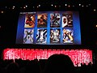

List of films based on Marvel Comics publications
television films or direct-to-video movies. Icon Comics Malibu Comics List of television series based on Marvel Comics publications List of films based
76 KB (4,974 words) - 13:26, 30 April 2025